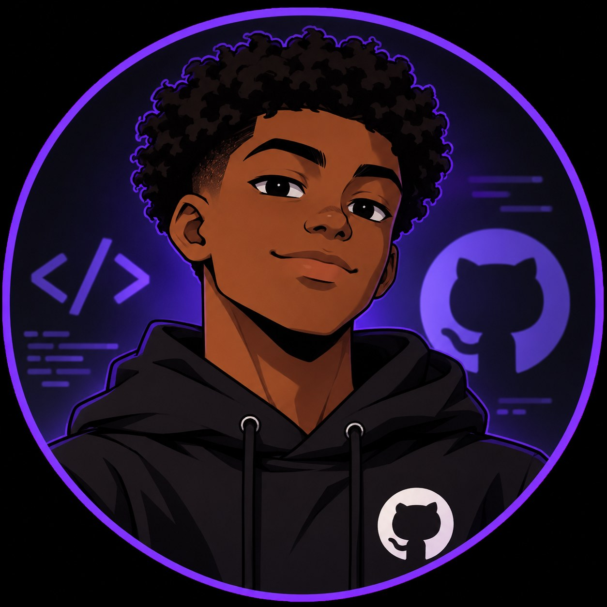

Desenvolvimento Web
Conhecimentos em HTML e estruturação de páginas para a criação de sites.
Estudante de Técnico em Informática, interessado em tecnologia, desenvolvimento web, manutenção de computadores e soluções digitais. Estou em busca de uma oportunidade para aprender, desenvolver minhas habilidades e crescer profissionalmente.
Entre em contato
Meu nome é Thiago Andrade Rodrigues e estou cursando Técnico em Informática. Tenho interesse pela área de tecnologia e gosto de aprender coisas novas, principalmente relacionadas à informática, programação e resolução de problemas.
Busco desenvolver meus conhecimentos por meio de atividades práticas e projetos, sempre procurando melhorar minhas habilidades técnicas.
Também pratico Jiu-Jitsu, atividade que contribui para minha disciplina, concentração, persistência e capacidade de lidar com desafios.
Conhecimentos em HTML e estruturação de páginas para a criação de sites.
Criação e edição de artes, apresentações e materiais visuais.
Conhecimentos em instalação, configuração e manutenção de equipamentos.
Interesse em analisar funcionalidades, identificar problemas e compreender o funcionamento de aplicações.
Experiência com captação de áudio, microfones, mesa de som, fones de ouvido, gravação e edição.
Desenvolvimento deste site para apresentar minhas habilidades, conhecimentos e trajetória na área de informática.
Atividades desenvolvidas durante o curso Técnico em Informática, envolvendo programação, tecnologia e banco de dados.
Ver o site completo Ver o códigoSite de um petshop fictício, feito na aula de Fundamentos de Desenvolvimento Web.
Ver o site completo Ver o códigoCurso em andamento.
Aprendizado em informática, programação, desenvolvimento web, manutenção e tecnologias digitais.
E-mail: thiagoceet@gmail.com
Linkedin: Meu LinkedIn
Localização: Vila Velha - ES
GitHub: Meu perfil no GitHub
Estou aberto a oportunidades de estágio e aprendizado na área de Tecnologia da Informação.